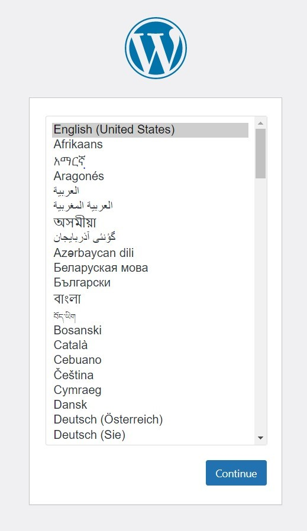

Tugas
Install Wordpress Menggunakan xampp
XAMPP, untuk menyediakan PHP environment, web server dan MySQL
server. Download aplikasi ini di:
https://www.apachefriends.org/download.html . Pada matakuliah ini, kita akan menggunakan PHP versi terbaru yaitu PHP8 sehingga pilih versi XAMPP dengan awalan 8.x saat proses download. Lakukan instalasi hingga selesai.
Setiap memulai proses pengembangan web, pastikan XAMPP pada bagian Apache dan MySQL server telah dijalankan seperti tampilan berikut.
Step 2: install Wordpress
- Download file wordpress pada link berikut: https://worpress.org/download.
- Setelah download selesai, copy file yang telah didownload ke folder htdocs lalu extract file. Hasil ekstrak akan menampilkan satu folder baru dengan nama wordpress.
- Disini karnan saya sudah pernah mengisntall wordpress. Jadi folder dengan nama wordpress tadi sana rename menjadi wp-1 unutuk membuat akun wordpress dengan database untuk website kita yang lain.

Secara default, folder htdocs berada di C:\xampp\htdocs.
Lakukan installasi dengan mengakses wordpress melalui browser. Pada browser, masukan URL beriku:
http://localhost/wordpress

Lanjutkan langkah-langkah instalasi wordpress berikut:
Pada halaman utama instalasi pemilihan bahasa, pilih English lalu klik Continue
Pada tahap informasi pembuatan file wp-config seperti gambar dibawah, klik Continue.

Pada tahap pengisian konfigurasi databases, isikan dengan data berikut:
Pesan error ini dapat terjadi karena database dengan nama wordpress tidak ditemukan.
Oleh karena itu, silahkan buat database wordpress dengan bantuan fitur
bawaan XAMPP yaitu PHPMyadmin. Untuk mengakses fitur ini, buka tab baru (jangan tutup tab instalasi), lalu ketikkan: http://localhost/phpmyadmin
Setelah tampilan muncul, klik menu Databases lalu isikan nama databases dan klik create.
Kembali ke tab instalasi wordpress, klik Try Again lalu isikan kembali konfigurasi database seperti tahap sebelumnya, klik Submit.
Jika konfigurasi tidak ada masalah, akan muncul tampilan seperti dibawah ini, lalu klik Run Installation
Note: untuk pengisisan database bisa disesuaikan dengan nama database yang anda buat, Dikasus ini saya membuat database dengan nama wp-1.
Lengkapi form informasi yang dibutuhkan lalu klik Install Wordpress. Contoh sebagai berikut:
Note: pada bagian site Title itu opsional boleh kalian isi dengan judul projek anda atau juga boleh dikosongkan
Note: pastikan untuk mengingat username dan password yang akan digunakan. Akun ini akan digunakan untuk setiap kali login ke dalam sistem wordpress.
Jika tidak ada masalah pada pengisian data, maka akan muncul halaman suskes. Klik Login untuk memulai proses manajemen wordpress.
Login ke dalam sistem dengan menggunakan username dan password yang sudah diisi pada tahap sebelumnya. Jika akun benar, maka akan muncul halaman dashboard utamawordpress.
Ketika sudah login akan muncul tampilan seperti ini dan selesai proses installasi wordpress dan silahkan explore fasilitas apa saja yang di sediakan wordpress unutk memudahkan proses pembuata website anda.
Untuk melihat hasil web setelah instalasi, ketikkan kembali URL berikut: http://localhost/nama_databses_anda
Contoh: punya saya http://localhost/wp-1
Maka akan keluar tampilan seperti ini:

Note: Untuk mengakses kembali halaman untuk login, ketikkan URL berikut: http://localhost/wordpress/wp-admin